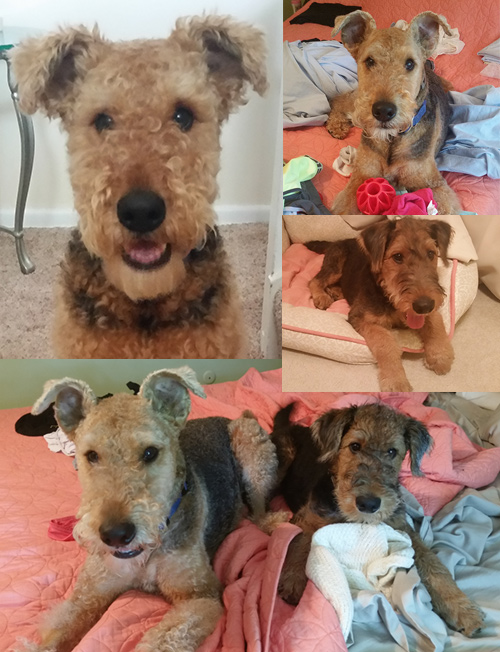

August 2015
Hi, I’m Henry. I’m 5 ½ years old, but I’ve only been with my mom for little over a year. My original owners weren’t able to give me enough attention, so I wasn’t as well behaved. They were going to give me to a shelter. My mom fell in love with me and asked to keep me. She gives me so much love and attention; we went to obedience classes together, we go hiking, and visit friends. I’m so much more behaved now. I love anything that squeaks and like to show off my toys when people came over but I hate when people leave. I throw a little tantrum to let them know I’m not pleased. Lately I haven’t been feeling so well, so my mom took me to the vet. I had to have my spleen removed. Then my legs were causing me a lot of pain and no one seemed to know what was wrong. After lots of horrible tests, the vets think that I have bone cancer. Now that I’ve recovered from my splenectomy I still have heaps of energy and I love playing with one of my three lamp chop toys (my mom spoils me). I love going anywhere with my mom and love going for rides in the car. Mom recently brought home a little puppy, Oliver. I was NOT amused at first and I barked at mom and had to scarf down all my food before the little monster came into the house. I’ve grown to like him though, he can be a little rough but he is fun to play with, especially because I usually win. |